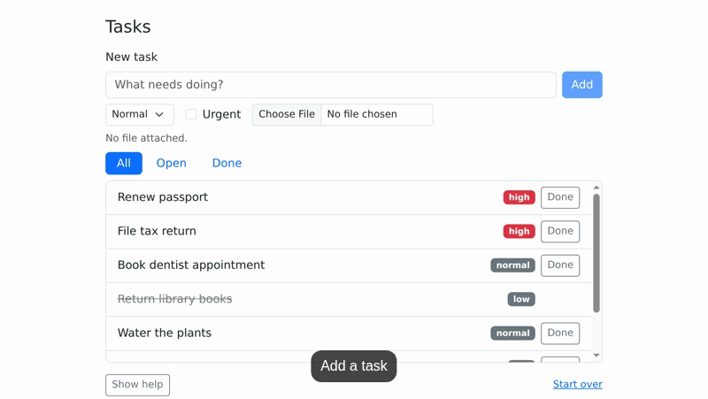
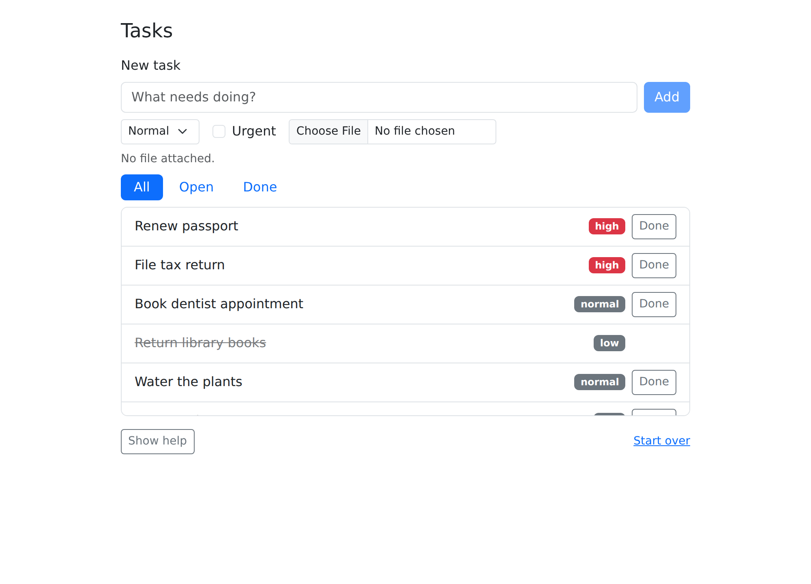
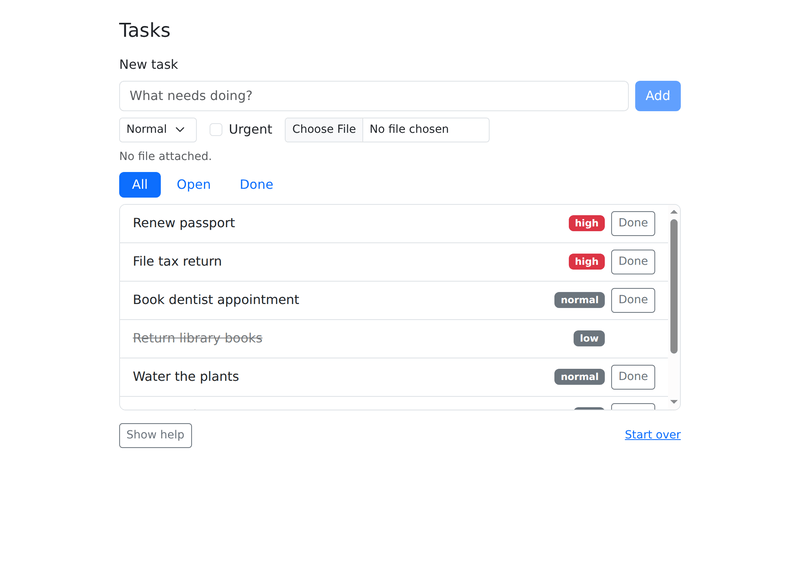
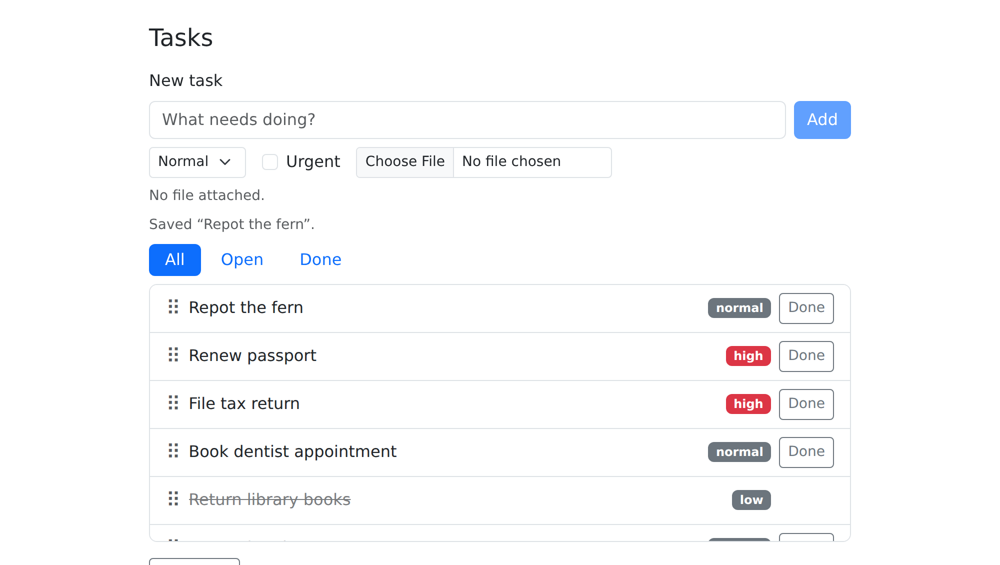
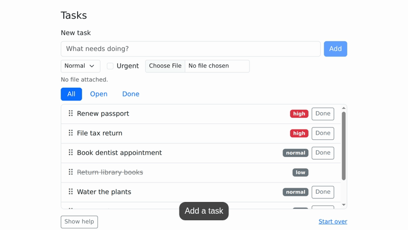
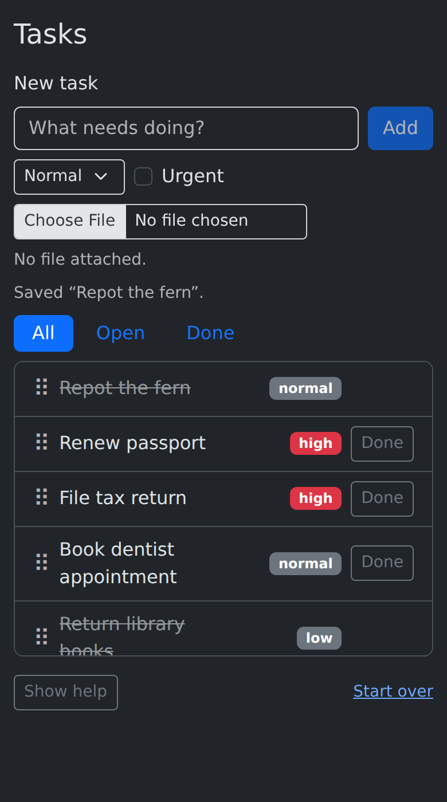

Suppose you’ve written a guide to a web app, and you want a short video that shows how to add a task. Doing it by hand means clicking through the app with a screen recorder running, trimming the result, and doing it all again whenever the app changes. With paparazzi, you write the steps down in R instead. paparazzi runs them in a real browser and records the video: the cursor glides to each control, text is typed one character at a time, and the camera zooms in on what matters.
In this article, we’ll build this video one step at a time:

We’ll use a small task-tracker page that ships with paparazzi. First we’ll open it and take a screenshot. Then we’ll script the steps, record them, and add the camera moves, highlight, and captions. At the end, we’ll see how the same script works as a test.
You’ll need Chrome or another Chromium-based browser, which paparazzi controls through the chromote package. The GIFs in this article need the gifski and png packages, and av for the captions.
Open a page
pz_open() starts a headless browser and loads a page. It
takes a URL, a local HTML file, or a Shiny app.
pz_example() returns the path to the examples that come
with paparazzi, so we’ll open the task tracker:
page <- pz_open(
pz_example("tasks"),
width = 1000,
height = 720,
color_scheme = "light"
)
page
#> ── paparazzi page ──────────────────────────────────────────────────────────────
#> URL http://127.0.0.1:4023/tasks.html
#> Device 1000 × 720 @2x · light
#> Recording off · cursor hiddenPrinting the page shows where the browser is and how it’s set up: a
1000 by 720 pixel viewport at twice the usual pixel density, like a
laptop’s high-resolution screen, with the page’s light color scheme.
These are device settings. They decide what the page
looks like, so they also decide what your screenshots and videos look
like. You can change them later with pz_device().
pz_screenshot() shows us the page:
page |> pz_screenshot()
A screenshot without a file path at the end of a knitted chunk
becomes a figure in the document, as above. At the console, it opens in
the viewer. Give it a path to save a file instead.
Script the steps
To add a task, a person would type a title into the form and click
Add. The script does the same, but it has to say which elements to use.
paparazzi finds elements with CSS selectors: the title field is
#task-title and the Add button is
#add-task.
Actions like pz_act_type() and
pz_act_click() use the page the way a person would, with
real mouse and keyboard events. Each action takes the page first and
returns it, so a script reads as one chain of steps joined by
|>:
page |>
pz_act_type("Repot the fern", target = "#task-title") |>
pz_act_click("#add-task")Before acting, each action waits for its element to be ready: on the page, visible, and not covered by anything else. Then it scrolls the element into view and acts.
Let’s check that the new task arrived. pz_loc()
describes an element more precisely than a selector alone. Here, it’s
the first .task-title on the page, which is where new tasks
go. pz_get_text() reads that element’s text:
pz_get_text(page, target = pz_loc(".task-title", which = "first"))
#> [1] "Renew passport"That’s not what we added. The page shows “Saving…” for a moment
before a new task appears, and pz_get_text() read the list
before the new task arrived. Actions wait for the element they act on,
but nothing waited for the result of the click.
For that, we need an expectation. Expectation
functions start with pz_expect_. Each one checks the page
and, if the check fails, tries again until it passes or times out:
page |>
pz_expect_text(
"Repot the fern",
target = pz_loc(".task-title", which = "first")
)This time the expectation waited for the page to finish saving. In a demo, expectations do two jobs. They keep the script in step with the page, so the next step doesn’t start before the page is ready. And they stop the script if the page doesn’t show what you expected, so you never publish a video of the wrong thing. When an expectation times out, its error says what it was looking for and what it last saw:
page |>
pz_expect_text(
"Walk the dog",
target = pz_loc(".task-title", which = "first"),
timeout = 1
)
#> Error in `pz_expect_text()`:
#> ! Expected text to contain "Walk the dog"
#> Target: `.task-title` (which: first)
#> Last seen: "Repot the fern"
#> Waited 1s.A pz_loc() description is called a
spec. A spec doesn’t find anything when you create it:
paparazzi looks up the elements each time you use it, so one spec keeps
working as the page changes. That makes specs good to define once and
reuse. We’ll describe the new task with one and use it in the video:
fern <- pz_loc(".task", has_text = "Repot the fern")has_text picks .task elements whose text
includes “Repot the fern”. pz_loc() can also pick a match
by position with which, or look inside another element with
within.
Record it
To record a video, wrap the steps in pz_record(). It
starts recording, runs the code in braces, then stops and writes the
file, even if the code throws an error. Leave out the path, as here, and
a knitted document includes the recording as a figure, while an
interactive session shows it in the viewer. Name the code
argument when you leave out the path.
We’ll reload the page to start fresh, and ask for a GIF, which plays
by itself on a web page. scale = 800 makes it 800 pixels
wide:
page |> pz_nav_reload()
page |>
pz_record(
format = "gif",
scale = 800,
code = {
page |>
pz_act_type("Repot the fern", target = "#task-title") |>
pz_act_click("#add-task") |>
pz_expect_visible(fern)
}
)
The steps are the same ones we ran before, but the recording looks as though a person is using the page. The cursor fades in over the title field and fades out while it types, so it doesn’t cover the text. Then it glides to the Add button and presses it. We call this staging. It only happens during a recording: outside one, the same steps run at full speed.
pz_stage() changes how steps are staged. It can set
where the cursor enters, how fast it moves, how big it is, how fast text
is typed, and how long to pause after each step. The settings last until
you change them. For the final video, the cursor will glide in from the
bottom of the frame, and each step will pause for 0.3 seconds so viewers
can keep up:
page |> pz_stage(enter = "bottom", pause = 0.3)Frame the shot
The recording above shows the whole viewport, with empty space around
the card. A frame crops a screenshot or recording to
part of the page. pz_frame() describes one: the elements to
fit, the padding around them, and optionally an aspect ratio. We’ll fit
the card’s heading and task list, pad them by 24 pixels, and widen the
result to 16:9, the shape of most video players and slides:
Like a spec, a frame is only a description. paparazzi measures the page when it uses the frame. A screenshot is a quick way to check one before recording:
page |> pz_screenshot(frame = shot)
A frame can also leave out padding or set it separately for each
side. See pz_frame() for how to anchor the content while
it’s widened, or keep the frame within another element.
Direct the viewer’s attention
A viewer watching our first recording has to find the form, and then the new task, on their own. The final video shows them both. The camera zooms and pans inside the frame, the new task gets an outline, and a caption at the bottom of the video says what’s happening.
The camera is part of the video, not the page.
pz_camera() doesn’t scroll or zoom the browser, so the
steps act on the page exactly as they did before. Outside a recording,
it does nothing. Here’s the whole script:
page |> pz_nav_reload()
page |>
pz_record(
frame = shot,
format = "gif",
scale = 800,
code = {
page |>
pz_annotate_caption("Add a task") |>
pz_camera("#new-task", wait = TRUE) |>
pz_act_type("Repot the fern", target = "#task-title") |>
pz_act_click("#add-task") |>
pz_camera_reset() |>
pz_expect_visible(fern) |>
pz_annotate(fern, type = "box", pad = 4) |>
pz_annotate_caption("New tasks go to the top of the list") |>
pz_cursor_leave() |>
pz_record_hold(1.5)
}
)
The new lines fall into three groups:
-
Camera.
pz_camera("#new-task")zooms in on the form. By default, camera moves run alongside the next step, so the camera and the cursor would move at the same time;wait = TRUElets the camera arrive first.pz_camera_reset()pulls back out to the whole frame. While it’s zoomed in, the camera also pans to keep each click and keystroke in view. -
Annotations.
pz_annotate_caption()sets the caption, and calling it again replaces the caption.pz_annotate()draws a box around the new task, afterpz_expect_visible()has waited for the task to exist. Annotations follow their elements as the page moves. -
Pacing.
pz_cursor_leave()moves the cursor out of the shot, so it doesn’t cover the result.pz_record_hold()holds the last frame for 1.5 seconds, so viewers have time to read the caption. The hold is added to the video, not to the script: outside a recording, it doesn’t slow anything down.
Annotations stay on the page until you clear them, and they appear in screenshots too. Clear them before moving on:
page |> pz_annotate_clear()pz_annotate() can also draw circles, underlines, and
highlights, with numbered badges. pz_annotate_callout()
adds text with an arrow, pz_annotate_spotlight() dims
everything but one element, and pz_annotate_redact() covers
private information. The annotations
article shows them all.
Clicks can point the viewer too. By default, the cursor shrinks
briefly as it presses, which is hard to see in a small video, so
pz_act_click() can draw a ring instead, one that grows out
from the click point and fades. Here the cursor checks Urgent with the
default press, then unchecks it with effect = "ring":
page |>
pz_record(
format = "gif",
scale = 800,
frame = pz_frame("#new-task", pad = 8),
code = {
page |>
pz_act_click("#task-urgent") |>
pz_act_click("#task-urgent", effect = "ring")
}
)The ring is crimson unless you pass a CSS color as
effect_color, and effect = "none" turns click
feedback off. To change every click on the page, set
pz_stage(click_effect = "ring"), and
click_effect_color for the ring’s color.
Work in one part of the page
Every task in our list has its own Done button. To mark the fern
done, the script needs its Done button. pz_find()
narrows the chain to one element, called the scope.
After that, targets are looked up inside the scope, so
".task-done" means this task’s Done button:
page |>
pz_find(fern) |>
pz_act_click(".task-done") |>
pz_expect_class("done")With no target, pz_expect_class() checks
the scope element itself: the task.
The scope belongs to the chain, not to page.
pz_act_click() changed the browser tab, and every chain on
page will see the fern marked done. pz_find()
changed nothing in the browser. It returned a new, scoped context, which
went down the chain, while page still refers to the whole
page. The next chain that starts from page starts at the
whole page again. To keep working in a scope, assign it to a
variable:
task_list <- pz_find(page, ".task-list")
task_list
#> ── paparazzi scope ─────────────────────────────────────────────────────────────
#> Scope root › `.task-list` (1)
#> URL http://127.0.0.1:4023/tasks.html
#> Device 1000 × 720 @2x · light
#> Recording off · cursor hiddenPrinting a scoped context shows the scope under a
paparazzi scope header. The Scope line reads from the whole
page (root) down to the task list, and (1)
says the scope holds one element. New chains from task_list
start inside it:
pz_get_count(task_list, target = ".task.done")
#> [1] 2Two tasks are done: the fern, and “Return library books”, which starts out done.
Make other versions
Each version of a demo, like a dark-mode version or a phone version,
only needs different device settings. pz_device() changes
them on an open page. The task tracker follows the browser’s color
scheme, so here it is on a phone in dark mode:
page |>
pz_device(width = 390, height = 700, mobile = TRUE, color_scheme = "dark") |>
pz_screenshot()
pz_device() can also zoom the page, turn on reduced
motion, or set the locale and time zone. Device settings stay in place
until you change them, so a recording made now would also be a phone
recording in dark mode.
When something goes wrong
If an action can’t find its element, or finds the wrong one,
pz_inspect() shows what paparazzi sees. It prints the page
summary and the matches for a target, looked up from the current scope.
Because it returns the context it was given, you can drop it into the
middle of a chain:
page |>
pz_find(".task-list") |>
pz_inspect(".task-done", show = "none")
#> ── paparazzi scope ─────────────────────────────────────────────────────────────
#> Scope root › `.task-list` (1)
#> URL http://127.0.0.1:4023/tasks.html
#> Device 390 × 700 @2x · dark
#> Target `.task-done` → 8 matches
#> 1 <button type="button" class="task-done btn btn-sm btn-outli…
#> hidden · enabled · at 306,324 · 55 × 31
#> 2 <button type="button" class="task-done btn btn-sm btn-outli…
#> visible · enabled · at 306,372 · 55 × 31
#> 3 <button type="button" class="task-done btn btn-sm btn-outli…
#> visible · enabled · at 306,420 · 55 × 31
#> 4 <button type="button" class="task-done btn btn-sm btn-outli…
#> visible · enabled · at 306,476 · 55 × 31
#> 5 <button type="button" class="task-done btn btn-sm btn-outli…
#> hidden · enabled · at 306,541 · 55 × 31
#> 6 <button type="button" class="task-done btn btn-sm btn-outli…
#> visible · enabled · at 306,606 · 55 × 31
#> 7 <button type="button" class="task-done btn btn-sm btn-outli…
#> visible · enabled · at 306,671 · 55 × 31
#> 8 <button type="button" class="task-done btn btn-sm btn-outli…
#> visible · enabled · at 306,728 · 55 × 31
#> Recording off · cursor hidden.task-done matches one button for each task. The buttons
of finished tasks are hidden, so pz_inspect() lists them as
hidden. An action targeting one of them would wait for it
to become visible, then time out. With show = "screenshot",
pz_inspect() also saves a screenshot with the matches
outlined and numbered.
We’re done with the browser, so let’s close it:
pz_close(page)Browser tests with paparazzi
Staging only happens during a recording, and camera moves and holds
do nothing outside one. So if you take away pz_record(),
the steps of the demo run at full speed, and the expectations still
check the page. That’s a browser test.
Inside a testthat test, paparazzi’s expectations count as test
expectations, and a failed expectation is a test failure.
pz_local_page() opens a page and closes it when the test
ends. Here are the steps of our video as a test:
test_that("a new task goes to the top of the list", {
page <- pz_local_page(pz_example("tasks"))
page |>
pz_act_type("Repot the fern", target = "#task-title") |>
pz_act_click("#add-task") |>
pz_expect_text(
"Repot the fern",
target = pz_loc(".task-title", which = "first")
)
})Where to go next
You’ve now built a demo video from a script: you drove a page with actions, kept the script in step with expectations, and framed, staged, and annotated the recording. From here:
- The three-part app walkthrough records a series of short MP4 videos with camera moves, a callout, captions, and redacted task titles.
- The annotations article shows every kind of annotation, including marks, callouts, spotlights, redactions, and captions, and how to style, frame, and clear them.
- The Shiny apps article shows how paparazzi starts Shiny apps, waits for them, and sets their inputs, and how to test them.
- The function reference lists every function by task, with an example for each.